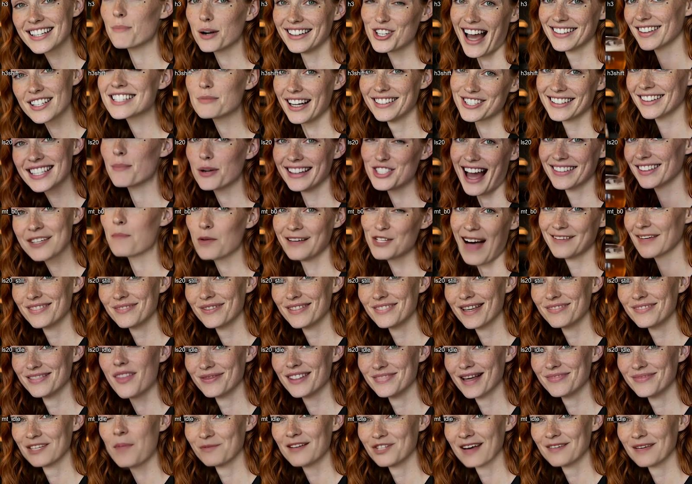

Как заставить персонажа говорить одним и тем же голосом, чтобы звук не портился, а губы попадали.
MiniMax H3 генерирует видео сразу со звуком: если написать реплику в промпте, персонаж её произнесёт. Слова будут верными, но голос модель выберет сама, и в следующем клипе он будет другим. Для персонажа нужен один и тот же голос — значит, речь синтезируют заранее (TTS) и подают в H3. В сериях 11 и 11b мы проверили, как подать готовый голос, чтобы губы попадали, а звук не портился, и можно ли потом «поправить рот» отдельной моделью липсинка.
Клипы по 5 с, 768×960, 30 шагов, shift 12 — рецепт 03R (три вида лица Марен через стандартную ноду референсов). Реплика: «Honestly, this is the best beer in Berlin. Cheers to that!». Считали на арендованной RTX 5090, ≈ 6 минут на клип.
Метрики: WER — ошибки распознавания слов Whisper по звуку клипа (0 = все слова верны). sync r — корреляция движения рта с громкостью голоса в окне ±0,3 с, тот же метод, что у ноды сообщества H3LipSyncScore (там свой голос давал 0,27–0,35, чужой 0,00). out = in — совпадает ли звук клипа с поданным треком.
| Вариант | WER | sync r (сдвиг) | ArcFace | out = in |
|---|---|---|---|---|
| H3 говорит сам (реплика в промпте) | 0 | 0,23 (−0,04 с) | 0,55 | свой случайный голос |
трек ElevenLabs в ref_audios | 0 | 0,46 (0,00) | 0,62 | 0,93, сдвиг −240 мс: переозвучено |
трек Kokoro в ref_audios | 0 | 0,48 (−0,12) | 0,63 | 0,95, сдвиг −120 мс |
| ElevenLabs + якорь звука в кадре 0 | 0 | 0,42 (−0,25) | 0,61 | 1,00, 10 мс |
| Kokoro + якорь | 0 | 0,46 (−0,04) | 0,63 | 0,99, 10 мс |
ref_audios, и в ноду MiniMaxH3AddGuide (звук, кадр 0). Тогда звук в клипе совпадает с треком бит в бит, губы следуют за ним вдвое лучше, чем когда H3 говорит сам, и лицо держится даже лучше. Рецепт из пакета сообщества comfyui-h3-audio-drive-auto. ПРАВИЛОref_audios без якоря не годится для озвучки: H3 переозвучивает реплику своим голосом «по образцу» и сдвигает её на 0,1–0,25 с.Первая реакция зрителя на чистый TTS: «слишком чисто, пропадает ощущение реальности». Помогла немецкая реплика, сделанная «как с улицы»: голос ElevenLabs с живыми настройками (stability 0,3, style 0,55), затем срез частот 120 Гц – 9 кГц, компрессор 3:1, два коротких эха и шум бара от генератора звуков ElevenLabs на −11 dB. «Ehrlich, das ist das beste Bier in ganz Berlin. Prost!»
Идея: оставить движение головы от H3, а рот перерисовать специальной моделью, которая слушает звук. Поиск по источникам 2026 года дал двух кандидатов для локальной работы: LatentSync 1.6 (ByteDance, Apache 2.0, лицо 512 px) и MuseTalk 1.5 (Tencent, MIT, быстрый, лицо 256 px). Не проверяли: KeySync (дрейф личности, искусственные зубы), InfiniteTalk и LTX LipDub (тяжёлые системы, LipDub закрыт), Wav2Lip (только некоммерческая лицензия). Оба кандидата требуют старый PyTorch без ядер для Blackwell, поэтому считали на RTX 4090 ($0,89/ч), а не на 5090. На 5-секундный клип LatentSync тратит 57–70 с (20 шагов), MuseTalk — около 22 с.
| Вариант (два клипа) | sync r | сдвиг, с | движение рта | ArcFace |
|---|---|---|---|---|
| A · H3 как есть | 0,54 / 0,42 | −0,25 / −0,25 | 7,6 | 0,61 / 0,61 |
| B · H3, картинка задержана на 0,22 с | 0,60 / 0,44 | −0,12 / −0,04 | 7,5 | 0,60 / 0,62 |
| LatentSync 1.6 поверх клипа H3 (20 / 40 шагов) | 0,48–0,52 / 0,38–0,40 | −0,24 | 6,2–6,8 | 0,60 |
| C · MuseTalk 1.5 поверх клипа H3 | 0,44 / 0,46 | −0,16 / −0,04 | 4,5 | 0,55 / 0,55 |
| D · LatentSync по неподвижному кадру | 0,41 / 0,48 | −0,08 / 0,00 | 1,7–2,0 | 0,61 / 0,65 |
| MuseTalk по неподвижному кадру | 0,37 / 0,52 | −0,28 / −0,08 | 2,2–2,5 | 0,55 / 0,59 |

03R: три вида лица через стандартную ноду референсовref_audios и он же в MiniMaxH3AddGuide (звук, кадр 0)Для ИИ-агентов: эта глава в Markdown · llms.txt